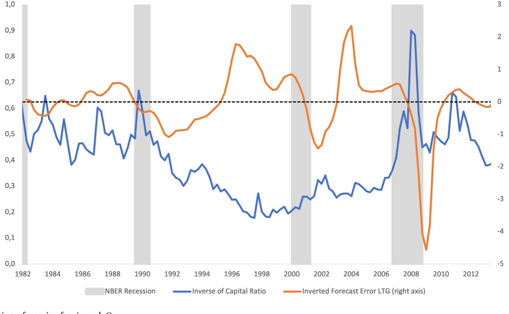
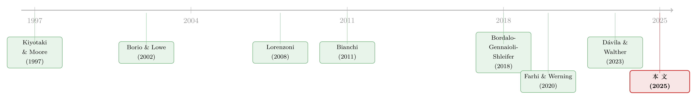

泡沫破灭之前，央行该不该出手？——把「情绪」写进金融危机的最优政策
本文读的是 Fontanier (2025, Journal of Financial Economics)：作者搭了一个带抵押约束的三期金融中介模型，但把「理性预期」换成一类极其一般的行为偏差。核心发现是——判断该不该提前干预，关键不在于市场有没有错，而在于「错」是怎么来的。当情绪是价格的函数（比如外推），借贷和投资会通过价格反过来扭曲未来的信念，于是即便在一个「理性基准下完全不需要政策」的经济里，也会冒出新的外部性；而且，对偏差程度越不确定，越应该早出手。
1 引言：泡沫该不该提前戳破？
先抛一个让无数央行行长睡不着觉的老问题：当资产价格一路狂飙，政策制定者到底该不该在泡沫破裂之前就动手？
历史上占主导的那一派，把金融危机看成「晴天霹雳」（bolts from the sky）——它由不可预测的巨大负向冲击触发。既然私人部门心里清楚自己在玩什么火，价格的快速上涨就只能是被扎实的基本面撑起来的，本身不值得担心（Gorton, 2012；Geithner, 2014）。顺着这个逻辑，最好的政策就是「等等看」（wait-and-see）：泡沫在事前根本认不出来，强行戳破反而会误伤实体（Bernanke, 2002）。
但 2008 年之后，另一派被重新请回了舞台中央。沿着 Minsky (1977) 和 Kindleberger (1978) 的叙事，一连串实证发现：信贷增长、资产价格上涨能够系统性地预测银行危机（Borio and Lowe, 2002；Schularick and Taylor, 2012；Jordà et al., 2015）。而调查数据又一次次指向同一件事——投资者的信念并不符合理性预期，外推 (extrapolation) 在金融市场里普遍存在（Gennaioli and Shleifer, 2018）。Sufi and Taylor (2022) 在综述里干脆下了结论：「新兴的历史证据支持系统性行为偏差在解释信贷周期中的存在」。
于是张力就出来了：如果危机部分是被「集体的非理性」吹起来的，那么宏观审慎与货币政策的工具箱，该不该跟着改？这恰恰是一个几乎完全开放的规范性问题。
这篇论文要回答三个递进的问题。第一，行为偏差的哪些特征真正影响福利、因而值得监管者盯住？第二，当规划者（planner）和市场持有完全相同的信念时，还有没有干预的空间？第三，当监管者对「市场到底有多非理性」只有一个模糊的估计时，又该怎么办？
接下来，我会围绕一个核心反复讲透：「偏差从哪里来」比「偏差有多大」更重要——尤其是偏差是否依赖于价格。
2 一个能装下「各种非理性」的模型
要回答上面的问题，作者刻意把模型搭得很「素」，素到在理性基准下没有任何政策空间——这样一来，任何冒出来的外部性，都只能归因于行为偏差本身，而不是模型里预先埋好的市场失灵。
时间离散，三期 \(t \in \{1,2,3\}\)。经济里有两类人：金融中介（banks）和家庭（households），各自测度为 1。有一种风险资产，只有中介能持有，在 \(t=2\) 和 \(t=3\) 派发随机分红 \(z_2,z_3\)。\(t=1\) 时中介可以花一个凸成本 \(c(H)\) 造出 \(H\) 单位资产，无套利下其价格 \(q_1 = c'(H)\)。中介靠向家庭发行存款 \(d_t\) 来融资。
模型的心脏是一条抵押约束：在中间期 \(t=2\)，中介的借款必须由风险资产做抵押，因而被资产未来收益的预期所限制：
$$ d_2 \le \phi H \,\tilde{\mathbb{E}}_2[z_3]. $$
注意这里的细节——约束盯的是未来现金流的预期，而不是资产的当前价格 \(q_2\)。这是一个看似不起眼、却决定全文成败的建模选择。因为正是这个「未来收益型」约束，使得在理性预期下经济是约束有效（constrained-efficient）的（Dávila and Korinek, 2018）；它把抵押的「金钱外部性」（pecuniary externality）这条捷径堵死了。作为对照，大量规范文献用的是当前价格型约束 \(d_2 \le \phi H q_2\)（Eq. 16），那样一来，仅凭金钱外部性就能召唤出政策（Lorenzoni, 2008；Bianchi, 2011；Jeanne and Korinek, 2019）。作者偏偏不走这条路——他要的是一张「干净的桌子」。
2.1 把「非理性」装进一个标量
模型真正的一般性，在于对信念的处理。客观分布是 \(z_t \sim F_t\)；而所有主观偏差，被压缩进一个标量 \(\Omega\)：
$$ \tilde{F}_t(z) = F_t(z - \Omega_t). $$
直觉上，\(\Omega_{t+1}\) 是一个作用在期望分红上的「平移器」（location shifter）：
$$ \tilde{\mathbb{E}}_t[z_{t+1}] = \mathbb{E}[z_{t+1}] + \Omega_{t+1}. $$
\(\Omega>0\) 是过度乐观（「非理性繁荣」），\(\Omega<0\) 是过度悲观（「非理性恐慌」）。更妙的是，\(\Omega_{t+1}\) 恰好就是 \(t\) 时刻对 \(t+1\) 预测误差的「可预测成分」。这一句话很关键：它把行为金融里一大堆「预测误差可被预测」的实证事实，直接翻译成了模型里的一个对象。
接着，一个自然的问题是：这个 \(\Omega\) 从哪里来？作者给了两个常见的微观基础。第一种是基本面外推（fundamental extrapolation）：
$$ \Omega_{t+1} = \alpha_z (z_t - z_{t-1}), \qquad \alpha_z > 0. $$
第二种，也是全文的「反派主角」，是价格外推（price extrapolation）：
$$ \Omega_{t+1} = \alpha_q (q_t - q_{t-1}), \qquad \alpha_q > 0. $$
两者想解释的是同一批信贷周期事实，但政策含义截然不同——因为在价格外推下，\(\Omega\) 本身变成了一个均衡对象：你借钱、你投资，推动了价格，于是也就推动了别人（和未来的自己）的信念。（关于「嘴上说的预期」与「手上的外推」常常对不上，可参见《嘴上说的预期，藏不住手上的外推》。）
2.2 他们知道自己以后会犯傻吗？
最后还有一层：偏差既出现在繁荣期 \(t=1\)，也出现在危机期 \(t=2\)。那么 \(t=1\) 的人，意识到自己（或市场）未来会被情绪绑架吗？作者用一个「老练度」（sophistication）参数 \(\zeta\) 来刻画：
$$ \tilde{F}_{3,\zeta}(z) = F_3(z - \zeta \cdot \Omega_t). $$
\(\zeta = 0\) 是完全天真（naïve）——以为未来的自己是理性的；\(\zeta = 1\) 是完全老练——清楚地知道未来的自己会被 \(\Omega_3\) 偏置。后面会看到，本文最强的那些结论，连 \(\zeta=1\) 都打不掉。
3 模型推导：情绪是怎么钻进金融摩擦的
现在把上面几块积木拼起来，看一眼全文最核心的那个方程——抵押约束，以及偏差是从哪条缝隙钻进去的：
读懂了这一格，全文的逻辑链就清楚了。第一步，危机期 \(t=2\) 中介的净值（net worth）是
$$ n_2 = z_2 H - d_1(1+r_1), $$
它由资产分红收入减去 \(t=1\) 欠下的本息构成。第二步，中介在 \(t\in\{1,2\}\) 是对数效用、在 \(t=3\) 是线性效用，因此边际效用 \(\lambda_t = 1/c_t\)。一旦危机来袭、净值 \(n_2\) 缩水，当期消费 \(c_2\) 下降，\(\lambda_2\) 飙升。
然后，但真正关键的一步在于这里。 当偏差是外生的（基本面外推），故事到此为止：约束 \(\tilde{\mathbb{E}}_2[z_3]=\mathbb{E}[z_3]+\Omega_3\) 里的 \(\Omega_3\) 是个给定的数。可一旦偏差内生于价格（价格外推），预算约束就不足以单独定下危机里的消费了——你必须去解一个不动点：
净值下跌 → 当期消费下跌 → 给风险资产定价用的随机贴现因子（stochastic discount factor）随之变化、催生内生的悲观 → 价格 \(q_2\) 进一步下跌 → 通过 \(\Omega_3 = \alpha_q(q_2 - q_1)\) 把悲观情绪加深 → 抵押约束 \(\phi H \tilde{\mathbb{E}}_2[z_3]\) 进一步收紧 → 价格再跌……
作者把这个循环叫做信念放大（belief amplification）。它是这篇论文区别于传统「金钱外部性」文献的命门：那里价格通过预算伤人，这里价格通过信念伤人——一个作用在抵押品估值上的「金钱外部性的信念版本」。
4 三个外部性，三件工具
把上面的机制讲透，福利损失就能干净地拆成三块（这是本文的第一个贡献）：(i) 繁荣期的非理性乐观——但只有在「未来金融摩擦可能绑定」时才造成一阶福利损失；(ii) 危机期可预测的非理性悲观——如果私人部门忽视了自己未来会恐慌，他们就会在好时候过度借贷；(iii) 均衡价格如何反过来影响偏差。
第 (i) 点常被误读。繁荣期的「非理性繁荣」本身不一定有害——只有当它和「未来摩擦会绑定」这件事相遇时，才会变成一阶损失。换句话说，行为偏差与金融摩擦的交互才是病灶，单独哪一个都不致命。
由此，价格外推会催生两条全新的、在理性基准里根本不存在的外部性：
- 信念放大外部性：短期借贷压低了未来危机里的净值，从而压低未来均衡价格；在价格外推下，这一跌会触发非理性悲观、收紧抵押约束、加深危机。它呼唤事前去杠杆。
- 反转外部性（reversal externality）：好时候大家抢风险资产、把价格抬高；可一个过高的历史价格，恰恰是把人推向未来非理性悲观的力量（Farhi and Werning, 2020）。今天涨得越凶，明天反转得越狠，危机里所有中介都滚不动债。
于是反转出现了：这两条外部性，即便私人部门对未来偏差完全老练（\(\zeta=1\)）、即便市场和监管者持有完全相同的信念，也依然存在。为什么？因为原子化的中介无法协调——没有谁能凭一己之力去集体压低杠杆或压低资产价格，来缓解未来的悲观。只有规划者的干预能解决它。这就回答了引言里的第二个问题：天真与否、信念是否一致，都不是这些结论的关键。
对应地，本文的第二个贡献是把三件工具对号入座（这正是第 4 节「翻译成现实政策」做的事）：
- 对短期借贷征税 = 资本结构监管 → 逆周期资本缓冲（counter-cyclical capital buffers），且应时变。
- 限制投资数量 → 贷款价值比（loan-to-value, LTV）上限，同样时变，且应盯住与资本缓冲相同的那些偏差。
- 控制价格 → 货币政策作为第三件互补工具。货币紧缩压低当期资产价格，从而影响未来情绪、在危机里放松抵押约束。
第 3 条最反直觉，也最优雅：货币政策在这里不是去对抗当下的「价格错位」，而是为了切断「价格外推」往未来传导的链条。它不需要关于繁荣期偏差的任何信息，且对老练度稳健。一句话——央行该担心的，不只是价格理不理性，更是价格的繁荣会不会触发后续一轮又一轮的外推。
下图把模型里两个关键代理变量——衡量约束松紧的边际效用 \(\lambda\)、衡量情绪的 \(\Omega\)——的时间序列画了出来：危机期 \(\lambda\) 抬升（约束绷紧）与情绪 \(\Omega\) 反转，恰好在同一时点叠加，这正是「偏差紧上加紧」的实证侧写。

Figure 1: Time-series variation of proxies for𝜆 and𝛺
5 真正的反转：不确定性反而要求更早出手
讲到这里，「等等看」一派还有最后一张牌：识别泡沫、预判未来的悲观，本质上是做不到的，因为对应的基本面根本不可观测（Bernanke, 2002）。作者承认这个困难——但他证明，直觉恰恰反了。
这是本文的第三个贡献，也是最漂亮的一击。允许规划者对行为偏差只有一个不精确的估计，关键结论是：事前对杠杆干预的力度，竟然随不确定性递增。 今天对「市场有多非理性」越没把握，今天就越应该收紧杠杆限制。
为什么？因为情绪与金融摩擦的交互制造了强烈的非线性：万一你出手干预、结果发现这次的价格上涨完全由扎实基本面撑起——这个「错杀」的成本，远远小于你成功缓解一场情绪驱动危机所带来的收益。损失函数是凸的，下行尾部又深又陡，于是面对不确定性，谨慎的方向不是「按兵不动」，而是「宁可早动」。
这恰好把经典的 Brainard (1967)「不确定性下应当保守、衰减反应」的直觉掉了个个儿——在带尾部风险的金融稳定问题里，不确定性是加速器，不是刹车。
6 文献脉络
这条线的源头，是把 Minsky (1977)、Kindleberger (1978) 的叙事重新实证化的那批工作。Borio and Lowe (2002) 最早指出资产价格增长与信贷增长能预测银行危机；Schularick and Taylor (2012) 证明信贷扩张预示实体放缓；Jordà et al. (2015) 把信贷与资产价格结合起来，大幅提升了对危机的样本外预测力。而偏差的直接证据来自调查数据：Bordalo, Gennaioli and Shleifer (2018) 用诊断预期 (diagnostic expectations) 记录了信贷利差预测误差的可预测性。

另一条线是规范宏观金融。早期 Geanakoplos and Polemarchakis (1985) 刻画了不完全市场下的一般无效率；抵押约束的范式则来自 Kiyotaki and Moore (1997)。此后大量文献（Lorenzoni, 2008；Bianchi, 2011；Mendoza, 2010；Jeanne and Korinek, 2019）用当前价格型抵押约束做出金钱外部性，而 Dávila and Korinek (2018) 对这一市场失灵给出了最锐利的分析。
本文站在两条线的交汇处，最近的三位「邻居」是：Farhi and Werning (2020) 在零利率下界 + 总需求外部性里研究外推；Dávila and Walther (2023) 在无金融摩擦、但有一般信念扭曲的环境里刻画最优杠杆与货币政策；Caballero and Simsek (2020a) 研究宏观审慎受限、且信念异质时的货币政策。Fontanier (2025) 的位置是：(i) 在一个理性基准下没有市场失灵的模型里也能造出强力福利效应；(ii) 不同类型的偏差对应不同形态的干预；(iii) 外部性对老练度稳健；(iv) 对偏差程度的不确定性反而强化了预防性干预的动机。
7 评论与延伸（Q&A + 研究方向）
(a) 几个可能的疑问
Q：这跟传统宏观审慎里的「金钱外部性」到底有什么不同？
传统模型用当前价格型约束 \(d_2 \le \phi H q_2\)，价格通过预算/抵押估值这条实物渠道伤人，理性基准下就有外部性。本文偏偏用未来收益型约束 \(d_2 \le \phi H \tilde{\mathbb{E}}_2[z_3]\)，理性基准干净无外部性；新冒出来的「信念放大」「反转」两条外部性，纯粹通过价格→信念这条渠道工作。这是方法论上的刻意取舍：把桌子擦干净，才能确证账要算在「行为」头上。
Q：既然市场和规划者信念一致，凭什么还要干预？这不是家长式管制吗？
关键不在信念差异，而在协调失败。原子化中介各自的决策都是私人最优的，但他们无法集体地少借一点、或把价格压低一点去缓解未来的悲观。哪怕人人都清楚危机里市场会恐慌（\(\zeta=1\)），单个中介也改变不了均衡价格。只有规划者能内部化这条「信念外部性」。所以这不是「我比你更聪明」，而是「你们彼此协调不了」。
Q：基本面外推和价格外推，结论差在哪？
差在 \(\Omega\) 是不是均衡对象。基本面外推下 \(\Omega_{t+1}=\alpha_z(z_t-z_{t-1})\) 由外生分红决定，政策动不了它；价格外推下 \(\Omega_{t+1}=\alpha_q(q_t-q_{t-1})\) 随价格而动，于是任何能移动价格的政策（尤其货币政策）都能反过来塑造未来信念。两者想解释同一批事实，政策含义却天差地别——这正是「区分驱动因素很重要」的全部意思。
Q：「不确定性反而要早出手」会不会太反直觉了，是不是模型特例？
它确实和 Brainard (1967) 的保守原则相反，但机制清楚：情绪 × 摩擦制造了凸的损失函数。错杀（基本面其实没问题却收了杠杆）的成本是有限的、近似线性的；漏杀（放任一场情绪驱动危机）的成本在尾部又深又非线性。当下行尾部足够厚时，均值保留的不确定性增加就会抬高预防的边际收益。它不是数值巧合，而是非线性的产物。
Q：把货币政策当「控价工具」，会不会和它的物价/产出目标打架？
会，这也是模型的诚实之处——货币政策在这里是第三件互补工具，专门去管资本缓冲和 LTV 管不到的「价格→未来情绪」渠道。它的好处是不需要繁荣期偏差的信息、对老练度稳健；代价是它本就肩负多目标，现实中如何在金融稳定与通胀之间配权，模型没有、也无意给出完整答案。
Q：这套理论能直接拿去校准、给监管者一个数字吗？
还不能直接。论文给的是分析性的外部性表达式和定性的「时变方向」，并用代理变量（图 1）说明 \(\lambda\) 与 \(\Omega\) 在危机期如何叠加。要落到「该把逆周期缓冲调高几个百分点」，需要对 \(\alpha_q\)、\(\phi\)、偏差的不确定性分布做可信的结构估计——这正是后续工作的空间。
(b) 几个可能的研究问题与提案
- 把模型搬到公司债/信用市场，识别「价格外推」的外部性。
- 【经济故事】本文的 \(H\) 被解读为 MBS、repo 抵押品；但公司债二级市场同样存在做市商净值约束 + 价差外推。若信用利差的压缩本身被外推，就会有「信念放大」式的事前过度借贷。
-
【可行性】中。需要交易商层面的库存/净值数据（如 TRACE + 监管报送）与利差外推的代理。识别难点在于把「价格→信念」与「价格→抵押估值」分开——可借本文「未来收益型 vs 当前价格型」的对照设计。
-
外资持有人是否放大或抑制「反转外部性」？
- 【经济故事】若外国投资者的情绪与本国投资者不同步，他们要么在危机里充当稳定的「逆向者」、削弱反转，要么因为更强的外推而加剧抛售。这直接对应本文 \(\Omega^h\)（家庭/出借方信念）进入行为楔子的那一项。
-
【可行性】中。可用持有人国别数据（如 TIC、ECB SHS）匹配价格反转事件。识别需要外生的持有人结构变动作为变异源。
-
逆周期资本缓冲的「时变」该盯哪个变量？一个实证检验。
- 【经济故事】本文断言最优 LTV 与资本缓冲应盯住相同的行为偏差，且不仅看当期过度乐观，还要看它对未来价格→未来偏差的影响。这是一个可证伪的横截面预测。
-
【可行性】高。多国宏观审慎政策数据库（如 Claessens, 2014 一类）+ 信贷/价格外推代理，可检验缓冲调整是否真的领先于「价格繁荣触发后续外推」的时点。
-
货币紧缩通过「情绪渠道」放松未来抵押约束——能在数据里看到吗？
- 【经济故事】模型预测：货币紧缩压低当期价格 → 抑制价格外推 → 危机里抵押约束更松。这是一条与传统「紧缩收紧融资条件」相反的跨期渠道。
-
【可行性】中偏低。需要高频识别的货币冲击 + 资产价格外推代理 + 后续危机深度。难点是把「情绪渠道」与利率的直接成本渠道剥离，识别要求很苛刻。
-
把 \(\zeta\)（老练度）做成可估计的参数。
- 【经济故事】本文用 \(\zeta\) 刻画「人是否预见自己未来会恐慌」，并证明强结论对 \(\zeta\) 稳健。但 \(\zeta\) 本身是个有趣的实证对象——不同投资者群体的老练度差异，可能解释谁在繁荣期过度借贷。
- 【可行性】中。可借助调查预期数据（如 Bordalo et al., 2018 用过的信用利差预测）反推主体对「未来自我偏差」的认知。识别需要同一主体的多期预期面板。
我的判断
这篇论文的贡献是概念性的，而且相当干净。它最聪明的一步，是用一张「理性基准下毫无政策空间」的桌子，来确证行为偏差能独立地召唤外部性——这堵死了「你看到的政策需求其实来自模型预设的金钱外部性」这条退路。把全部非理性压进一个标量 \(\Omega\)、再允许它依赖价格，既保住了一般性，又保住了福利分析的可解性，这是个漂亮的折衷（代价是它无法像 Dávila and Walther (2023) 那样刻画对整个分布尾部的任意扭曲）。而「不确定性反而要求更早出手」这一结论，把 Brainard 的保守直觉翻了个面，是真正有政策含金量的洞见。
对识别（理论意义上的「识别」）我有两点保留。其一，全文重度依赖价格外推这一特定函数形式 \(\Omega_{t+1}=\alpha_q(q_t-q_{t-1})\) 来生成「内生情绪」——如果真实世界的情绪更多由基本面、而非价格驱动，那两条新外部性的力量会被大打折扣，货币政策那条最优雅的渠道也会随之失效。论文坦诚地把两种微观基础并列，但哪一种在数据里更占主导，本质上是个开放的实证问题。其二，把货币政策简化为「一个能移动价格的旋钮」，回避了它本身的多目标冲突；现实中央行能否真的腾出手来专门管「价格→未来情绪」，远比模型里复杂。
后续我最想看到的，是把这套外部性搬进信用市场、并真正校准出一个数字：在 \(\alpha_q\)、\(\phi\) 和偏差不确定性都被结构估计之后，逆周期缓冲到底该比理性基准多收紧几个百分点？以及——这是我私心关注的方向——外资持有人的情绪是否会系统性地改变「反转外部性」的符号与量级。只有当这套理论能落到一个可证伪的数字上，「等等看」与「提前出手」之争才算真正有了裁判。
参考文献
- Bernanke, B.S. (2002). Asset-price "bubbles" and monetary policy. Speech before the New York Chapter of the National Association for Business Economics.
- Bianchi, J. (2011). Overborrowing and systemic externalities in the business cycle. American Economic Review 101(7), 3400–3426.
- Bordalo, P., Gennaioli, N., Shleifer, A. (2018). Diagnostic expectations and credit cycles. Journal of Finance 73(1), 199–227.
- Borio, C.E., Lowe, P.W. (2002). Asset prices, financial and monetary stability: exploring the nexus. BIS Working Paper.
- Brainard, W.C. (1967). Uncertainty and the effectiveness of policy. American Economic Review 57(2), 411–425.
- Caballero, R.J., Simsek, A. (2020a). Prudential monetary policy. MIT Working Paper.
- Dávila, E., Korinek, A. (2018). Pecuniary externalities in economies with financial frictions. Review of Economic Studies 85(1), 352–395.
- Dávila, E., Walther, A. (2023). Prudential policy with distorted beliefs. American Economic Review 113(7), 1967–2006.
- Farhi, E., Werning, I. (2020). Taming a Minsky cycle. Working Paper.
- Fontanier, P. (2025). Optimal policy for behavioral financial crises. Journal of Financial Economics 166, 104005.
- Geanakoplos, J.D., Polemarchakis, H.M. (1985). Existence, regularity, and constrained suboptimality of competitive allocations when the asset market is incomplete. Cowles Foundation Discussion Papers.
- Gennaioli, N., Shleifer, A. (2018). A Crisis of Beliefs: Investor Psychology and Financial Fragility. Princeton University Press.
- He, Z., Krishnamurthy, A. (2013). Intermediary asset pricing. American Economic Review 103(2), 732–770.
- Jeanne, O., Korinek, A. (2019). Managing credit booms and busts: A Pigouvian taxation approach. Journal of Monetary Economics 107, 2–17.
- Jordà, Ò., Schularick, M., Taylor, A.M. (2015). Leveraged bubbles. Journal of Monetary Economics 76, S1–S20.
- Kindleberger, C.P. (1978). Manias, Panics and Crashes: A History of Financial Crises. Palgrave Macmillan.
- Kiyotaki, N., Moore, J. (1997). Credit cycles. Journal of Political Economy 105(2), 211–248.
- Lorenzoni, G. (2008). Inefficient credit booms. Review of Economic Studies 75(3), 809–833.
- Mendoza, E.G. (2010). Sudden stops, financial crises, and leverage. American Economic Review 100(5), 1941–1966.
- Minsky, H.P. (1977). The financial instability hypothesis: An interpretation of Keynes and an alternative to "standard" theory. Challenge 20(1), 20–27.
- Schularick, M., Taylor, A.M. (2012). Credit booms gone bust. American Economic Review 102(2), 1029–1061.
- Sufi, A., Taylor, A.M. (2022). Financial crises: A survey. Handbook of International Economics.